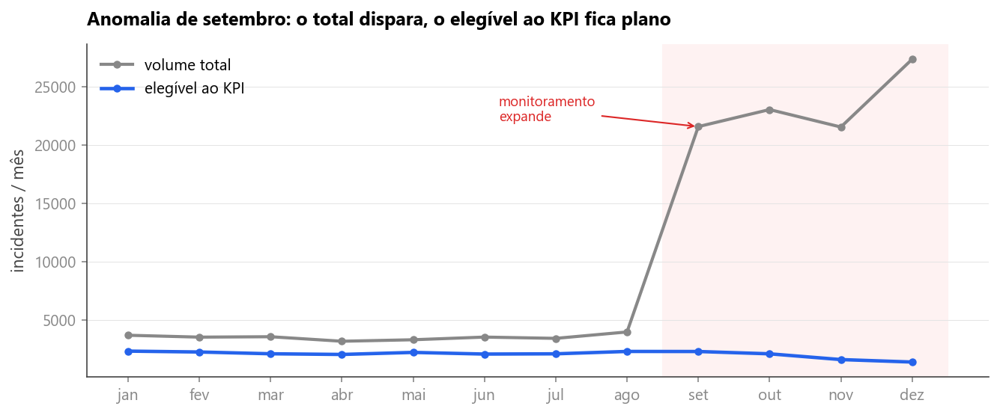

<style>
/* ═══════════════════════════════════════════════════════════════════════════
   VAGA 1 do deck da banca ao vivo · O TERRENO
   Quatro análises candidatas para a mesma posição, todas data-slide="3".
     a  .tra   as perdas de prazo na base elegível e a raridade do evento
     b  .trb   o volume por dia da semana, com intervalo de 95%
     c  .trc   o poder explicativo do volume diário sobre as perdas
     d  .trd   a origem do salto de setembro de 2025
   Todas em fundo claro. .tr é o que as quatro compartilham; o resto vive
   dentro do prefixo de cada uma, então nenhuma disputa regra com a outra.
   Keyframe leva o prefixo no nome: depois do _montar.py o nome é global.
   Altura e largura de barra sempre em pixel, via --h e --w no style.
   ═══════════════════════════════════════════════════════════════════════════ */
.tr .tt{font-size:46px;letter-spacing:-1.6px}
.tr .palco{flex:1;min-height:0;display:flex;flex-direction:column;margin-top:18px}
@keyframes tr-sobe{to{transform:none}}
@keyframes tr-corre{to{transform:none}}
@keyframes tr-pop{to{opacity:1;transform:none}}

/* ═════════════ a · A RARIDADE DO EVENTO ═════════════
   A grade de 400 quadrados é o objeto dominante: os 400 aparecem varrendo o
   campo da esquerda para a direita e só então quatro viram vermelhos. A
   raridade se vê antes de ser lida. Embaixo, o número e o corte por
   prioridade, separados por um fio vertical de 1px. */
.tra .grade{padding:20px 30px 16px;flex-shrink:0}
.tra .gcap{font-size:12px;font-weight:700;letter-spacing:1.9px;text-transform:uppercase;
  color:var(--tx2)}
/* quadrado de 29px fixo e o sobrante repartido entre as colunas: assim a grade
   ocupa a largura toda do cartão sem coluna quebrada e sem vão na direita. */
.tra .dots{display:grid;grid-template-columns:repeat(40,29px);column-gap:0;row-gap:5px;
  justify-content:space-between;margin-top:14px}
.tra .dot{width:29px;height:29px;border-radius:3px;background:#DDE3EC;opacity:0;
  transform:scale(.35)}
.tra.is-active .dot{animation:tr-pop .4s var(--out) forwards;
  animation-delay:calc(620ms + var(--i) * 2.2ms)}
.tra.is-active .dot.hot{animation:tr-pop .4s var(--out) forwards,
  tra-pinta .62s var(--spring) forwards;
  animation-delay:calc(620ms + var(--i) * 2.2ms),1820ms}
@keyframes tra-pinta{
  from{background:#DDE3EC;transform:scale(1);box-shadow:0 0 0 0 rgba(220,38,38,0)}
  58%{transform:scale(1.62)}
  to{background:var(--bad);transform:scale(1.18);box-shadow:0 0 0 4px rgba(220,38,38,.16)}
}
.tra .glg{display:flex;gap:28px;margin-top:13px;font-size:13px;color:var(--tx2)}
.tra .glg span{display:inline-flex;align-items:center;gap:8px}
.tra .glg i{width:12px;height:12px;border-radius:3px;background:#DDE3EC}
.tra .glg .q i{background:var(--bad)}
.tra .glg .q{color:var(--bad);font-weight:700}

.tra .linha{display:flex;align-items:center;gap:44px;flex:1;min-height:0;margin-top:6px}
.tra .esq{width:562px;flex-shrink:0}
.tra .big .v{font-size:88px;color:var(--bad);letter-spacing:-3.6px}
.tra .big .k b{font-size:21px}
.tra .big .k{font-size:17px}
.tra .taxa{display:inline-flex;align-items:center;gap:9px;font-size:15px;font-weight:700;
  color:var(--bad);background:var(--bad-l);border:1px solid rgba(220,38,38,.24);
  padding:8px 15px;border-radius:999px;margin-top:14px}
.tra .taxa .ic{font-size:15px}
.tra .fio{width:1px;height:150px;background:var(--line);transform:scaleY(0);
  transform-origin:center}
.tra.is-active .fio{animation:tr-sobe .6s var(--out) forwards;animation-delay:var(--d,0ms)}
.tra .dir{flex:1;min-width:0}
.tra .dt{font-size:12px;font-weight:700;letter-spacing:1.9px;text-transform:uppercase;
  color:var(--tx2)}
.tra .pr{display:flex;align-items:center;gap:16px;margin-top:13px}
.tra .pr .pl{width:186px;flex-shrink:0;font-size:14.5px;color:var(--tx);line-height:1.25}
.tra .pr .pl b{display:block;color:var(--head);font-size:16.5px;font-weight:800}
.tra .pr .tk{flex:1;height:30px;background:#EDF1F7;border-radius:9px;position:relative}
.tra .pr .fl{position:absolute;top:0;bottom:0;left:0;width:var(--w);border-radius:9px;
  background:linear-gradient(90deg,#F0736F,#DC2626);display:flex;align-items:center;
  justify-content:flex-end;padding-right:12px;font-size:14.5px;font-weight:800;color:#fff;
  font-variant-numeric:tabular-nums;transform:scaleX(0);transform-origin:left}
.tra.is-active .pr .fl{animation:tr-corre .7s var(--out) forwards;animation-delay:var(--d,0ms)}
/* o número entra depois que a barra parou de crescer: dentro de um scaleX em
   curso ele apareceria achatado na horizontal. */
.tra .pr .fl span{opacity:0}
.tra.is-active .pr .fl span{animation:tra-acende .35s var(--out) forwards;
  animation-delay:var(--dn,0ms)}
@keyframes tra-acende{to{opacity:1}}

/* ═════════════ b · O RITMO DA SEMANA ═════════════
   A figura do notebook é o objeto dominante e traz as duas prioridades lado a
   lado. Embaixo, dentro do mesmo cartão, uma faixa com três leituras divididas
   por fio de 1px: é um objeto só, não três cartões em fileira. */
.trb .fig{width:1356px;margin:0 auto;padding:22px 26px 18px;display:flex;
  flex-direction:column}
.trb .fig img{display:block;width:1304px;height:487px;border-radius:8px}
.trb .faixa{display:flex;margin-top:15px;padding-top:18px;border-top:1px solid var(--line)}
.trb .lt{flex:1;padding:0 26px;display:flex;gap:13px;align-items:flex-start}
.trb .lt+.lt{border-left:1px solid var(--line)}
.trb .lt:first-child{padding-left:2px}
.trb .lt:last-child{padding-right:2px}
.trb .lt .ci{width:38px;height:38px;border-radius:10px;flex-shrink:0;display:flex;
  align-items:center;justify-content:center;background:var(--accent-l);color:var(--accent);
  font-size:19px}
.trb .lt.k .ci{background:var(--good-l);color:var(--good)}
.trb .lt .lv{font-size:16.5px;font-weight:800;color:var(--head);letter-spacing:-.3px;
  line-height:1.18}
.trb .lt.k .lv{color:var(--good)}
.trb .lt .lf{font-size:13.5px;color:var(--tx);margin-top:5px;line-height:1.42}
.trb .lt .lf b{color:var(--head)}

/* ═════════════ c · O QUE O VOLUME NÃO EXPLICA ═════════════
   Número dominante à esquerda; à direita, a taxa de perda por quartil de
   volume. As quatro colunas quase não se movem, e isso é o argumento. */
.trc .tt{font-size:50px;letter-spacing:-1.9px}
.trc .linha{flex:1;min-height:0;display:flex;gap:48px;margin-top:20px}
.trc .esq{width:496px;flex-shrink:0;display:flex;flex-direction:column;
  justify-content:space-between;padding:4px 0 6px}
.trc .r2{font-size:128px;font-weight:900;letter-spacing:-7px;line-height:.9;color:var(--accent);
  font-variant-numeric:tabular-nums}
.trc .r2lb{font-size:16px;color:var(--tx);line-height:1.5;margin-top:14px;max-width:430px}
.trc .r2lb b{color:var(--head)}
.trc .papel{padding-top:22px;border-top:1px solid var(--line)}
.trc .pl{display:flex;gap:12px;font-size:15.5px;color:var(--tx);line-height:1.45}
.trc .pl+.pl{margin-top:12px}
.trc .pl b{color:var(--head);font-weight:700}
.trc .pl i{width:9px;height:9px;border-radius:50%;background:var(--accent);flex-shrink:0;
  margin-top:8px}
.trc .pl.b2 i{background:#9AA6B6}
.trc .quad{flex:1;min-width:0;padding:26px 34px 22px;display:flex;flex-direction:column}
.trc .qh{font-size:12px;font-weight:700;letter-spacing:1.9px;text-transform:uppercase;
  color:var(--tx2)}
.trc .cols{flex:1;display:flex;align-items:flex-end;gap:34px;margin-top:16px;min-height:0}
.trc .cl{flex:1;display:flex;flex-direction:column;align-items:center;justify-content:flex-end}
.trc .cv{font-size:27px;font-weight:800;letter-spacing:-1px;color:var(--accent);
  font-variant-numeric:tabular-nums;margin-bottom:10px}
.trc .cb{width:100%;max-width:126px;height:var(--h);border-radius:11px 11px 2px 2px;
  background:linear-gradient(180deg,#93C0F7,#2563EB);
  box-shadow:0 20px 30px -24px rgba(37,99,235,.6);transform:scaleY(0);transform-origin:bottom}
.trc.is-active .cb{animation:tr-sobe .9s var(--out) forwards;animation-delay:var(--d,0ms)}
.trc .cx{width:100%;border-top:2px solid var(--line);margin-top:9px;padding-top:9px;
  font-size:13.5px;color:var(--tx2);text-align:center}
.trc .qf{margin-top:15px;font-size:13.5px;color:var(--tx2);font-variant-numeric:tabular-nums}
.trc .qf b{color:var(--head)}

/* ═════════════ d · A ANOMALIA DE SETEMBRO ═════════════
   A figura à esquerda e, à direita, três leituras em bandas de altura igual
   separadas por fio de 1px. A terceira é o desfecho e leva a cor de acerto. */
.trd .linha{flex:1;min-height:0;display:flex;gap:32px;margin-top:18px;align-items:center}
.trd .fig{width:1130px;flex-shrink:0;padding:24px 24px 16px}
.trd .fig img{display:block;width:1080px;height:449px;border-radius:8px}
.trd .fsrc{font-size:12px;color:var(--tx2);letter-spacing:.3px;margin-top:10px}
.trd .rail{flex:1;min-width:0;display:grid;grid-template-rows:repeat(3,1fr);height:496px}
.trd .lt{display:flex;gap:13px;align-items:center;padding:16px 0}
.trd .lt+.lt{border-top:1px solid var(--line)}
.trd .lt .ci{width:40px;height:40px;border-radius:11px;flex-shrink:0;display:flex;
  align-items:center;justify-content:center;background:var(--accent-l);color:var(--accent);
  font-size:20px}
.trd .lt.k .ci{background:var(--good-l);color:var(--good)}
.trd .lt .lv{font-size:17px;font-weight:800;color:var(--head);letter-spacing:-.3px;
  line-height:1.18}
.trd .lt.k .lv{color:var(--good)}
.trd .lt .lf{font-size:13.5px;color:var(--tx);margin-top:6px;line-height:1.45}
.trd .lt .lf b{color:var(--head);font-variant-numeric:tabular-nums}
</style>

<!-- ══════════════ 3 · VAGA 1 · a · A RARIDADE DO EVENTO ══════════════ -->
<section class="slide light tr tra" data-slide="3" data-var="a" data-quem="ana">
  <div class="mesh"></div><div class="grid-bg"></div>
  <div class="hd">
    <div class="bi"><svg viewBox="0 0 28 28" fill="none"><path d="M6 22L12 14L16 17L22 8" stroke="#fff" stroke-width="2.2" stroke-linecap="round" stroke-linejoin="round"/><circle cx="22" cy="8" r="3" stroke="#3B82F6" stroke-width="1.5"/><circle cx="22" cy="8" r="1.2" fill="#3B82F6"/></svg></div>
    <div class="bn">Cronos</div><span class="bt">BANCA FINAL · 15/09/2026</span>
    <div class="tag">Base elegível ao KPI · 2025</div>
  </div>
  <div class="body">
    <span class="eb"><span class="rv" style="--d:220ms">O terreno · o evento que se quer prever</span></span>
    <h1 class="tt">
      <span class="mask" style="--d:300ms"><span>Em 2025, <span class="bd">238</span> incidentes elegíveis ao KPI</span></span>
      <span class="mask" style="--d:400ms"><span>perderam o prazo de OLA.</span></span>
    </h1>

    <div class="palco">
      <div class="cartao grade rv3" style="--d:520ms">
        <div class="gcap rv" style="--d:720ms">400 quadrados para os 25.156 incidentes elegíveis ao KPI em 2025</div>
        <div class="dots">
          <i class="dot" style="--i:0"></i><i class="dot" style="--i:1"></i><i class="dot" style="--i:2"></i><i class="dot" style="--i:3"></i><i class="dot" style="--i:4"></i><i class="dot" style="--i:5"></i><i class="dot" style="--i:6"></i><i class="dot" style="--i:7"></i><i class="dot" style="--i:8"></i><i class="dot" style="--i:9"></i><i class="dot" style="--i:10"></i><i class="dot" style="--i:11"></i><i class="dot" style="--i:12"></i><i class="dot" style="--i:13"></i><i class="dot" style="--i:14"></i><i class="dot" style="--i:15"></i><i class="dot" style="--i:16"></i><i class="dot" style="--i:17"></i><i class="dot" style="--i:18"></i><i class="dot" style="--i:19"></i><i class="dot" style="--i:20"></i><i class="dot" style="--i:21"></i><i class="dot" style="--i:22"></i><i class="dot" style="--i:23"></i><i class="dot" style="--i:24"></i><i class="dot" style="--i:25"></i><i class="dot" style="--i:26"></i><i class="dot" style="--i:27"></i><i class="dot" style="--i:28"></i><i class="dot" style="--i:29"></i><i class="dot" style="--i:30"></i><i class="dot" style="--i:31"></i><i class="dot" style="--i:32"></i><i class="dot" style="--i:33"></i><i class="dot" style="--i:34"></i><i class="dot" style="--i:35"></i><i class="dot" style="--i:36"></i><i class="dot" style="--i:37"></i><i class="dot" style="--i:38"></i><i class="dot" style="--i:39"></i>
          <i class="dot" style="--i:40"></i><i class="dot" style="--i:41"></i><i class="dot" style="--i:42"></i><i class="dot" style="--i:43"></i><i class="dot" style="--i:44"></i><i class="dot" style="--i:45"></i><i class="dot" style="--i:46"></i><i class="dot" style="--i:47"></i><i class="dot" style="--i:48"></i><i class="dot" style="--i:49"></i><i class="dot" style="--i:50"></i><i class="dot" style="--i:51"></i><i class="dot" style="--i:52"></i><i class="dot" style="--i:53"></i><i class="dot" style="--i:54"></i><i class="dot" style="--i:55"></i><i class="dot" style="--i:56"></i><i class="dot" style="--i:57"></i><i class="dot" style="--i:58"></i><i class="dot" style="--i:59"></i><i class="dot" style="--i:60"></i><i class="dot" style="--i:61"></i><i class="dot" style="--i:62"></i><i class="dot" style="--i:63"></i><i class="dot" style="--i:64"></i><i class="dot" style="--i:65"></i><i class="dot" style="--i:66"></i><i class="dot" style="--i:67"></i><i class="dot" style="--i:68"></i><i class="dot" style="--i:69"></i><i class="dot" style="--i:70"></i><i class="dot" style="--i:71"></i><i class="dot" style="--i:72"></i><i class="dot hot" style="--i:73"></i><i class="dot" style="--i:74"></i><i class="dot" style="--i:75"></i><i class="dot" style="--i:76"></i><i class="dot" style="--i:77"></i><i class="dot" style="--i:78"></i><i class="dot" style="--i:79"></i>
          <i class="dot" style="--i:80"></i><i class="dot" style="--i:81"></i><i class="dot" style="--i:82"></i><i class="dot" style="--i:83"></i><i class="dot" style="--i:84"></i><i class="dot" style="--i:85"></i><i class="dot" style="--i:86"></i><i class="dot" style="--i:87"></i><i class="dot" style="--i:88"></i><i class="dot" style="--i:89"></i><i class="dot" style="--i:90"></i><i class="dot" style="--i:91"></i><i class="dot" style="--i:92"></i><i class="dot" style="--i:93"></i><i class="dot" style="--i:94"></i><i class="dot" style="--i:95"></i><i class="dot" style="--i:96"></i><i class="dot" style="--i:97"></i><i class="dot" style="--i:98"></i><i class="dot" style="--i:99"></i><i class="dot" style="--i:100"></i><i class="dot" style="--i:101"></i><i class="dot" style="--i:102"></i><i class="dot" style="--i:103"></i><i class="dot" style="--i:104"></i><i class="dot" style="--i:105"></i><i class="dot" style="--i:106"></i><i class="dot" style="--i:107"></i><i class="dot" style="--i:108"></i><i class="dot" style="--i:109"></i><i class="dot" style="--i:110"></i><i class="dot" style="--i:111"></i><i class="dot" style="--i:112"></i><i class="dot" style="--i:113"></i><i class="dot" style="--i:114"></i><i class="dot" style="--i:115"></i><i class="dot" style="--i:116"></i><i class="dot" style="--i:117"></i><i class="dot" style="--i:118"></i><i class="dot" style="--i:119"></i>
          <i class="dot" style="--i:120"></i><i class="dot" style="--i:121"></i><i class="dot" style="--i:122"></i><i class="dot" style="--i:123"></i><i class="dot" style="--i:124"></i><i class="dot" style="--i:125"></i><i class="dot" style="--i:126"></i><i class="dot" style="--i:127"></i><i class="dot" style="--i:128"></i><i class="dot" style="--i:129"></i><i class="dot" style="--i:130"></i><i class="dot" style="--i:131"></i><i class="dot" style="--i:132"></i><i class="dot" style="--i:133"></i><i class="dot" style="--i:134"></i><i class="dot" style="--i:135"></i><i class="dot" style="--i:136"></i><i class="dot" style="--i:137"></i><i class="dot" style="--i:138"></i><i class="dot" style="--i:139"></i><i class="dot" style="--i:140"></i><i class="dot" style="--i:141"></i><i class="dot" style="--i:142"></i><i class="dot" style="--i:143"></i><i class="dot" style="--i:144"></i><i class="dot" style="--i:145"></i><i class="dot" style="--i:146"></i><i class="dot" style="--i:147"></i><i class="dot" style="--i:148"></i><i class="dot" style="--i:149"></i><i class="dot" style="--i:150"></i><i class="dot" style="--i:151"></i><i class="dot" style="--i:152"></i><i class="dot" style="--i:153"></i><i class="dot" style="--i:154"></i><i class="dot" style="--i:155"></i><i class="dot" style="--i:156"></i><i class="dot" style="--i:157"></i><i class="dot" style="--i:158"></i><i class="dot" style="--i:159"></i>
          <i class="dot" style="--i:160"></i><i class="dot" style="--i:161"></i><i class="dot" style="--i:162"></i><i class="dot" style="--i:163"></i><i class="dot" style="--i:164"></i><i class="dot" style="--i:165"></i><i class="dot" style="--i:166"></i><i class="dot" style="--i:167"></i><i class="dot hot" style="--i:168"></i><i class="dot" style="--i:169"></i><i class="dot" style="--i:170"></i><i class="dot" style="--i:171"></i><i class="dot" style="--i:172"></i><i class="dot" style="--i:173"></i><i class="dot" style="--i:174"></i><i class="dot" style="--i:175"></i><i class="dot" style="--i:176"></i><i class="dot" style="--i:177"></i><i class="dot" style="--i:178"></i><i class="dot" style="--i:179"></i><i class="dot" style="--i:180"></i><i class="dot" style="--i:181"></i><i class="dot" style="--i:182"></i><i class="dot" style="--i:183"></i><i class="dot" style="--i:184"></i><i class="dot" style="--i:185"></i><i class="dot" style="--i:186"></i><i class="dot" style="--i:187"></i><i class="dot" style="--i:188"></i><i class="dot" style="--i:189"></i><i class="dot" style="--i:190"></i><i class="dot" style="--i:191"></i><i class="dot" style="--i:192"></i><i class="dot" style="--i:193"></i><i class="dot" style="--i:194"></i><i class="dot" style="--i:195"></i><i class="dot" style="--i:196"></i><i class="dot" style="--i:197"></i><i class="dot" style="--i:198"></i><i class="dot" style="--i:199"></i>
          <i class="dot" style="--i:200"></i><i class="dot" style="--i:201"></i><i class="dot" style="--i:202"></i><i class="dot" style="--i:203"></i><i class="dot" style="--i:204"></i><i class="dot" style="--i:205"></i><i class="dot" style="--i:206"></i><i class="dot" style="--i:207"></i><i class="dot" style="--i:208"></i><i class="dot" style="--i:209"></i><i class="dot" style="--i:210"></i><i class="dot" style="--i:211"></i><i class="dot" style="--i:212"></i><i class="dot" style="--i:213"></i><i class="dot" style="--i:214"></i><i class="dot" style="--i:215"></i><i class="dot" style="--i:216"></i><i class="dot" style="--i:217"></i><i class="dot" style="--i:218"></i><i class="dot" style="--i:219"></i><i class="dot" style="--i:220"></i><i class="dot" style="--i:221"></i><i class="dot" style="--i:222"></i><i class="dot" style="--i:223"></i><i class="dot" style="--i:224"></i><i class="dot" style="--i:225"></i><i class="dot" style="--i:226"></i><i class="dot" style="--i:227"></i><i class="dot" style="--i:228"></i><i class="dot" style="--i:229"></i><i class="dot" style="--i:230"></i><i class="dot" style="--i:231"></i><i class="dot" style="--i:232"></i><i class="dot" style="--i:233"></i><i class="dot" style="--i:234"></i><i class="dot" style="--i:235"></i><i class="dot" style="--i:236"></i><i class="dot" style="--i:237"></i><i class="dot" style="--i:238"></i><i class="dot" style="--i:239"></i>
          <i class="dot" style="--i:240"></i><i class="dot" style="--i:241"></i><i class="dot" style="--i:242"></i><i class="dot" style="--i:243"></i><i class="dot" style="--i:244"></i><i class="dot" style="--i:245"></i><i class="dot" style="--i:246"></i><i class="dot" style="--i:247"></i><i class="dot" style="--i:248"></i><i class="dot" style="--i:249"></i><i class="dot" style="--i:250"></i><i class="dot" style="--i:251"></i><i class="dot" style="--i:252"></i><i class="dot" style="--i:253"></i><i class="dot" style="--i:254"></i><i class="dot" style="--i:255"></i><i class="dot" style="--i:256"></i><i class="dot" style="--i:257"></i><i class="dot" style="--i:258"></i><i class="dot hot" style="--i:259"></i><i class="dot" style="--i:260"></i><i class="dot" style="--i:261"></i><i class="dot" style="--i:262"></i><i class="dot" style="--i:263"></i><i class="dot" style="--i:264"></i><i class="dot" style="--i:265"></i><i class="dot" style="--i:266"></i><i class="dot" style="--i:267"></i><i class="dot" style="--i:268"></i><i class="dot" style="--i:269"></i><i class="dot" style="--i:270"></i><i class="dot" style="--i:271"></i><i class="dot" style="--i:272"></i><i class="dot" style="--i:273"></i><i class="dot" style="--i:274"></i><i class="dot" style="--i:275"></i><i class="dot" style="--i:276"></i><i class="dot" style="--i:277"></i><i class="dot" style="--i:278"></i><i class="dot" style="--i:279"></i>
          <i class="dot" style="--i:280"></i><i class="dot" style="--i:281"></i><i class="dot" style="--i:282"></i><i class="dot" style="--i:283"></i><i class="dot" style="--i:284"></i><i class="dot" style="--i:285"></i><i class="dot" style="--i:286"></i><i class="dot" style="--i:287"></i><i class="dot" style="--i:288"></i><i class="dot" style="--i:289"></i><i class="dot" style="--i:290"></i><i class="dot" style="--i:291"></i><i class="dot" style="--i:292"></i><i class="dot" style="--i:293"></i><i class="dot" style="--i:294"></i><i class="dot" style="--i:295"></i><i class="dot" style="--i:296"></i><i class="dot" style="--i:297"></i><i class="dot" style="--i:298"></i><i class="dot" style="--i:299"></i><i class="dot" style="--i:300"></i><i class="dot" style="--i:301"></i><i class="dot" style="--i:302"></i><i class="dot" style="--i:303"></i><i class="dot" style="--i:304"></i><i class="dot" style="--i:305"></i><i class="dot" style="--i:306"></i><i class="dot" style="--i:307"></i><i class="dot" style="--i:308"></i><i class="dot" style="--i:309"></i><i class="dot" style="--i:310"></i><i class="dot" style="--i:311"></i><i class="dot" style="--i:312"></i><i class="dot" style="--i:313"></i><i class="dot" style="--i:314"></i><i class="dot" style="--i:315"></i><i class="dot" style="--i:316"></i><i class="dot" style="--i:317"></i><i class="dot" style="--i:318"></i><i class="dot" style="--i:319"></i>
          <i class="dot" style="--i:320"></i><i class="dot" style="--i:321"></i><i class="dot" style="--i:322"></i><i class="dot" style="--i:323"></i><i class="dot" style="--i:324"></i><i class="dot" style="--i:325"></i><i class="dot" style="--i:326"></i><i class="dot" style="--i:327"></i><i class="dot" style="--i:328"></i><i class="dot" style="--i:329"></i><i class="dot" style="--i:330"></i><i class="dot" style="--i:331"></i><i class="dot" style="--i:332"></i><i class="dot" style="--i:333"></i><i class="dot" style="--i:334"></i><i class="dot" style="--i:335"></i><i class="dot" style="--i:336"></i><i class="dot" style="--i:337"></i><i class="dot" style="--i:338"></i><i class="dot" style="--i:339"></i><i class="dot" style="--i:340"></i><i class="dot" style="--i:341"></i><i class="dot" style="--i:342"></i><i class="dot" style="--i:343"></i><i class="dot" style="--i:344"></i><i class="dot" style="--i:345"></i><i class="dot" style="--i:346"></i><i class="dot" style="--i:347"></i><i class="dot" style="--i:348"></i><i class="dot" style="--i:349"></i><i class="dot" style="--i:350"></i><i class="dot hot" style="--i:351"></i><i class="dot" style="--i:352"></i><i class="dot" style="--i:353"></i><i class="dot" style="--i:354"></i><i class="dot" style="--i:355"></i><i class="dot" style="--i:356"></i><i class="dot" style="--i:357"></i><i class="dot" style="--i:358"></i><i class="dot" style="--i:359"></i>
          <i class="dot" style="--i:360"></i><i class="dot" style="--i:361"></i><i class="dot" style="--i:362"></i><i class="dot" style="--i:363"></i><i class="dot" style="--i:364"></i><i class="dot" style="--i:365"></i><i class="dot" style="--i:366"></i><i class="dot" style="--i:367"></i><i class="dot" style="--i:368"></i><i class="dot" style="--i:369"></i><i class="dot" style="--i:370"></i><i class="dot" style="--i:371"></i><i class="dot" style="--i:372"></i><i class="dot" style="--i:373"></i><i class="dot" style="--i:374"></i><i class="dot" style="--i:375"></i><i class="dot" style="--i:376"></i><i class="dot" style="--i:377"></i><i class="dot" style="--i:378"></i><i class="dot" style="--i:379"></i><i class="dot" style="--i:380"></i><i class="dot" style="--i:381"></i><i class="dot" style="--i:382"></i><i class="dot" style="--i:383"></i><i class="dot" style="--i:384"></i><i class="dot" style="--i:385"></i><i class="dot" style="--i:386"></i><i class="dot" style="--i:387"></i><i class="dot" style="--i:388"></i><i class="dot" style="--i:389"></i><i class="dot" style="--i:390"></i><i class="dot" style="--i:391"></i><i class="dot" style="--i:392"></i><i class="dot" style="--i:393"></i><i class="dot" style="--i:394"></i><i class="dot" style="--i:395"></i><i class="dot" style="--i:396"></i><i class="dot" style="--i:397"></i><i class="dot" style="--i:398"></i><i class="dot" style="--i:399"></i>
        </div>
        <div class="glg">
          <span class="rv" style="--d:2020ms"><i></i>Cumpriram o prazo</span>
          <span class="q rv" style="--d:2120ms"><i></i>Perderam o prazo de OLA</span>
        </div>
      </div>

      <div class="linha">
        <div class="esq">
          <div class="big rv" style="--d:2280ms">
            <div class="v num"><span class="ct" data-to="238" data-delay="2320">0</span></div>
            <div class="k"><b>Perdas de prazo de OLA</b>na base elegível ao KPI, em 2025</div>
          </div>
          <div class="taxa rv" style="--d:2480ms">
            <span class="ic"><svg viewBox="0 0 24 24"><circle cx="12" cy="12" r="9"/><path d="M9 9l6 6M15 9l-6 6"/></svg></span>
            Taxa de perda em 2025: 0,95%
          </div>
        </div>
        <i class="fio" style="--d:2360ms"></i>
        <div class="dir">
          <div class="dt rv" style="--d:2540ms">Perdas de prazo por prioridade · 2025</div>
          <div class="pr">
            <span class="pl rv" style="--d:2620ms"><b>Prioridade 3</b>prazo de 12 horas</span>
            <div class="tk rv" style="--d:2620ms">
              <div class="fl num" style="--w:500px;--d:2700ms;--dn:3380ms"><span>196</span></div>
            </div>
          </div>
          <div class="pr">
            <span class="pl rv" style="--d:2740ms"><b>Prioridade 2</b>prazo de 4 horas</span>
            <div class="tk rv" style="--d:2740ms">
              <div class="fl num" style="--w:107px;--d:2820ms;--dn:3500ms"><span>42</span></div>
            </div>
          </div>
        </div>
      </div>
    </div>
  </div>
  <div class="ft"><span>25.156 elegíveis ao KPI em 2025 · a meta do KPI é anual · a base de três anos soma 25.600 e 248 perdas</span></div>
</section>

<!-- ══════════════ 3 · VAGA 1 · b · O RITMO DA SEMANA ══════════════ -->
<section class="slide light tr trb" data-slide="3" data-var="b" data-quem="ana">
  <div class="mesh"></div><div class="grid-bg"></div>
  <div class="hd">
    <div class="bi"><svg viewBox="0 0 28 28" fill="none"><path d="M6 22L12 14L16 17L22 8" stroke="#fff" stroke-width="2.2" stroke-linecap="round" stroke-linejoin="round"/><circle cx="22" cy="8" r="3" stroke="#3B82F6" stroke-width="1.5"/><circle cx="22" cy="8" r="1.2" fill="#3B82F6"/></svg></div>
    <div class="bn">Cronos</div><span class="bt">BANCA FINAL · 15/09/2026</span>
    <div class="tag">Séries elegíveis à meta · 2025</div>
  </div>
  <div class="body">
    <span class="eb"><span class="rv" style="--d:220ms">O terreno · o ritmo da semana</span></span>
    <h1 class="tt">
      <span class="mask" style="--d:300ms"><span>O volume cai no sábado e no domingo <span class="hl">nas prioridades 2 e 3</span>.</span></span>
    </h1>

    <div class="palco">
      <div class="cartao fig rv3" style="--d:520ms">
        
        <div class="faixa">
          <div class="lt rv" style="--d:1180ms">
            <span class="ic ci"><svg viewBox="0 0 24 24"><rect x="3" y="4.5" width="18" height="16" rx="2.5"/><path d="M3 9h18M8 2.5v4M16 2.5v4"/></svg></span>
            <div><div class="lv">Os cinco dias úteis ficam num patamar parecido</div>
              <div class="lf">o modelo trata o dia útil como um nível só</div></div>
          </div>
          <div class="lt rv" style="--d:1320ms">
            <span class="ic ci"><svg viewBox="0 0 24 24"><path d="M12 4.5v14M5.5 12l6.5 6.5L18.5 12"/></svg></span>
            <div><div class="lv">A queda do fim de semana é mais funda na prioridade 3</div>
              <div class="lf">o domingo é o menor dia da semana nas duas séries</div></div>
          </div>
          <div class="lt k rv" style="--d:1460ms">
            <span class="ic ci"><svg viewBox="0 0 24 24"><circle cx="12" cy="12" r="9"/><circle cx="12" cy="12" r="4.6"/><circle cx="12" cy="12" r="1.4" fill="currentColor" stroke="none"/></svg></span>
            <div><div class="lv">O intervalo de 95% separa dia útil de fim de semana</div>
              <div class="lf">as pistas de calendário do modelo são <b>o dia da semana</b> e <b>se é feriado</b></div></div>
          </div>
        </div>
      </div>
    </div>
  </div>
  <div class="ft"><span>Média por dia da semana com intervalo de 95% · séries elegíveis à meta, 2025</span></div>
</section>

<!-- ══════════════ 3 · VAGA 1 · c · O QUE O VOLUME NÃO EXPLICA ══════════════ -->
<section class="slide light tr trc" data-slide="3" data-var="c" data-quem="ana">
  <div class="mesh"></div><div class="grid-bg"></div>
  <div class="hd">
    <div class="bi"><svg viewBox="0 0 28 28" fill="none"><path d="M6 22L12 14L16 17L22 8" stroke="#fff" stroke-width="2.2" stroke-linecap="round" stroke-linejoin="round"/><circle cx="22" cy="8" r="3" stroke="#3B82F6" stroke-width="1.5"/><circle cx="22" cy="8" r="1.2" fill="#3B82F6"/></svg></div>
    <div class="bn">Cronos</div><span class="bt">BANCA FINAL · 15/09/2026</span>
    <div class="tag">Dias úteis de 2025</div>
  </div>
  <div class="body">
    <span class="eb"><span class="rv" style="--d:220ms">O terreno · o que o volume não explica</span></span>
    <h1 class="tt">
      <span class="mask" style="--d:300ms"><span>O volume do dia explica <span class="hl">2,5%</span></span></span>
      <span class="mask" style="--d:400ms"><span>da variação das perdas de prazo.</span></span>
    </h1>

    <div class="linha">
      <div class="esq">
        <div>
          <div class="r2 rv" style="--d:620ms"><span class="ct" data-to="2,5" data-dec="1" data-delay="700">0,0</span>%</div>
          <div class="r2lb rv" style="--d:780ms">da variação diária das perdas de prazo vem do volume.
            R² de <b>0,025</b> em 261 dias úteis de 2025.</div>
        </div>
        <div class="papel">
          <div class="pl rv" style="--d:920ms"><i></i><span>A previsão de volume dimensiona a carga das <b>prioridades 2 e 3</b>.</span></div>
          <div class="pl b2 rv" style="--d:1020ms"><i></i><span>O caso que vai perder o prazo vem do <b>modelo de risco</b>.</span></div>
        </div>
      </div>
      <div class="cartao quad rv3" style="--d:700ms">
        <div class="qh rv" style="--d:900ms">Taxa de perda de prazo por quartil de volume diário</div>
        <div class="cols">
          <div class="cl">
            <div class="cv rv" style="--d:1140ms"><span class="ct" data-to="0,8" data-dec="1" data-delay="1180">0,0</span>%</div>
            <span class="cb" style="--h:288px;--d:1180ms"></span>
            <span class="cx rv" style="--d:1420ms">Q1 · menor</span>
          </div>
          <div class="cl">
            <div class="cv rv" style="--d:1220ms"><span class="ct" data-to="0,9" data-dec="1" data-delay="1260">0,0</span>%</div>
            <span class="cb" style="--h:324px;--d:1260ms"></span>
            <span class="cx rv" style="--d:1480ms">Q2</span>
          </div>
          <div class="cl">
            <div class="cv rv" style="--d:1300ms"><span class="ct" data-to="1,0" data-dec="1" data-delay="1340">0,0</span>%</div>
            <span class="cb" style="--h:360px;--d:1340ms"></span>
            <span class="cx rv" style="--d:1540ms">Q3</span>
          </div>
          <div class="cl">
            <div class="cv rv" style="--d:1380ms"><span class="ct" data-to="0,7" data-dec="1" data-delay="1420">0,0</span>%</div>
            <span class="cb" style="--h:252px;--d:1420ms"></span>
            <span class="cx rv" style="--d:1600ms">Q4 · maior</span>
          </div>
        </div>
        <div class="qf rv" style="--d:1720ms">r = <b>0,159</b> · p = <b>0,011</b></div>
      </div>
    </div>
  </div>
  <div class="ft"><span>261 dias úteis de 2025 · R² de 0,025 · r = 0,159 · p-valor 0,011</span></div>
</section>

<!-- ══════════════ 3 · VAGA 1 · d · A ANOMALIA DE SETEMBRO ══════════════ -->
<section class="slide light tr trd" data-slide="3" data-var="d" data-quem="ana">
  <div class="mesh"></div><div class="grid-bg"></div>
  <div class="hd">
    <div class="bi"><svg viewBox="0 0 28 28" fill="none"><path d="M6 22L12 14L16 17L22 8" stroke="#fff" stroke-width="2.2" stroke-linecap="round" stroke-linejoin="round"/><circle cx="22" cy="8" r="3" stroke="#3B82F6" stroke-width="1.5"/><circle cx="22" cy="8" r="1.2" fill="#3B82F6"/></svg></div>
    <div class="bn">Cronos</div><span class="bt">BANCA FINAL · 15/09/2026</span>
    <div class="tag">Volume mensal · 2025</div>
  </div>
  <div class="body">
    <span class="eb"><span class="rv" style="--d:220ms">O terreno · a anomalia de setembro</span></span>
    <h1 class="tt">
      <span class="mask" style="--d:300ms"><span>O salto de setembro de 2025 vem da</span></span>
      <span class="mask" style="--d:400ms"><span>expansão do <span class="hl">monitoramento automático</span>.</span></span>
    </h1>

    <div class="linha">
      <div class="cartao fig rv3" style="--d:540ms">
        
        <div class="fsrc rv" style="--d:900ms">A faixa rosada marca os meses em que o monitoramento já estava expandido</div>
      </div>
      <div class="rail">
        <div class="lt rv" style="--d:1120ms">
          <span class="ic ci"><svg viewBox="0 0 24 24"><rect x="4" y="8" width="16" height="11" rx="3"/><path d="M12 4v4M8 13h.01M16 13h.01M9 19v2M15 19v2"/></svg></span>
          <div><div class="lv">Monitoramento automático</div>
            <div class="lf">de <b>2.404</b> para <b>20.008</b> incidentes; a origem manual fica em 1,5 mil</div></div>
        </div>
        <div class="lt rv" style="--d:1260ms">
          <span class="ic ci"><svg viewBox="0 0 24 24"><circle cx="12" cy="12" r="9"/><path d="M12 7v5l3.2 2"/></svg></span>
          <div><div class="lv">Fechamento sem intervenção</div>
            <div class="lf"><b>47</b> casos em agosto contra <b>17.838</b> em setembro</div></div>
        </div>
        <div class="lt k rv" style="--d:1400ms">
          <span class="ic ci"><svg viewBox="0 0 24 24"><path d="M12 3l7 3v6c0 4.5-3 7-7 9-4-2-7-4.5-7-9V6z"/><path d="M9.5 12l1.8 1.8 3.5-3.8"/></svg></span>
          <div><div class="lv">A série elegível fica estável</div>
            <div class="lf"><b>2.330</b> em agosto e <b>2.324</b> em setembro: a previsão não é afetada</div></div>
        </div>
      </div>
    </div>
  </div>
  <div class="ft"><span>Volume mensal de 2025 · total do dataset contra a base elegível ao KPI</span></div>
</section>
